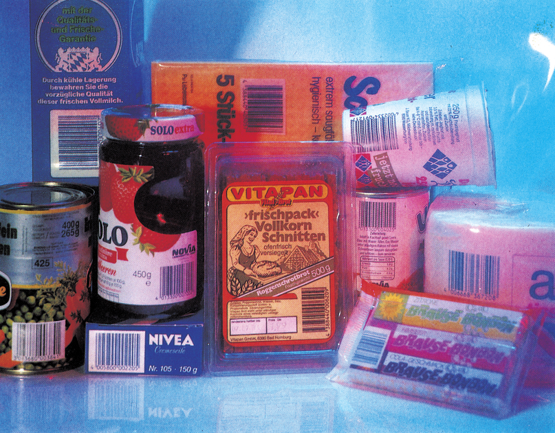
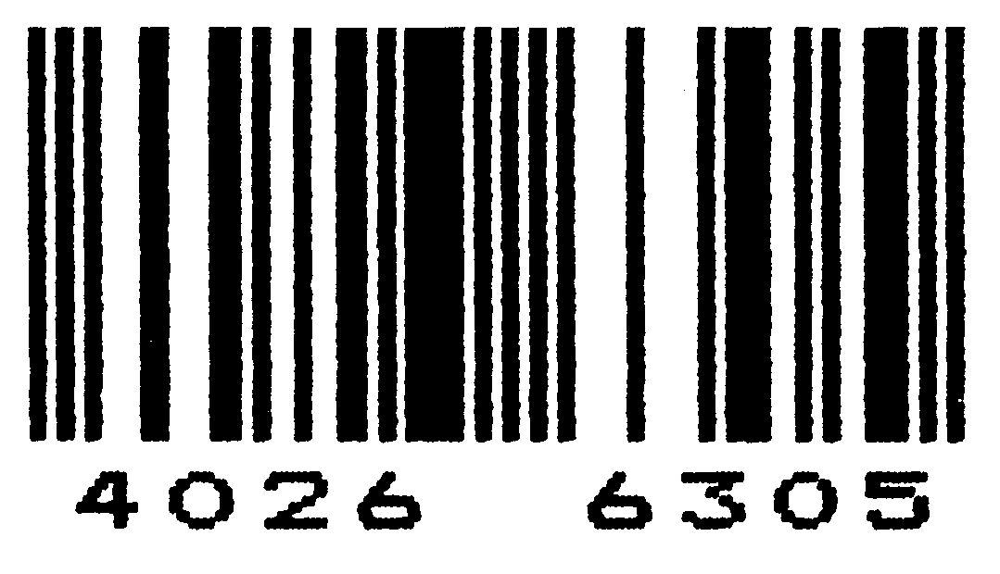
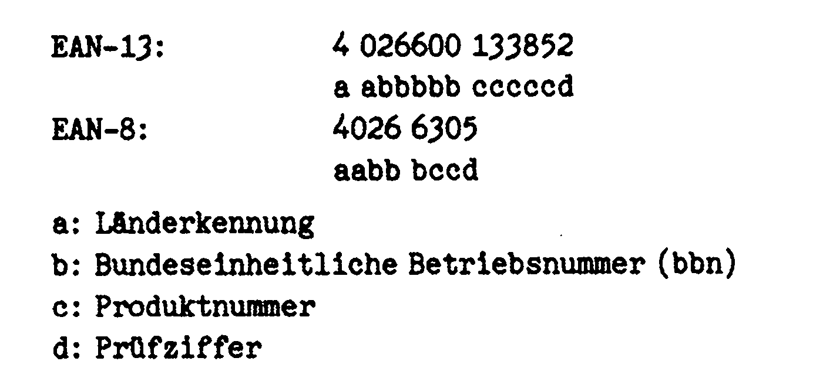
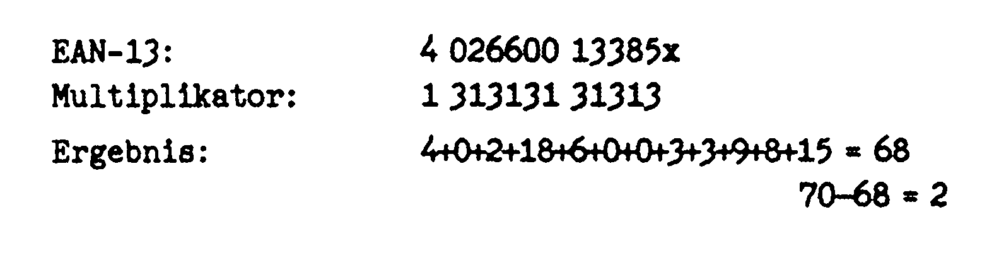
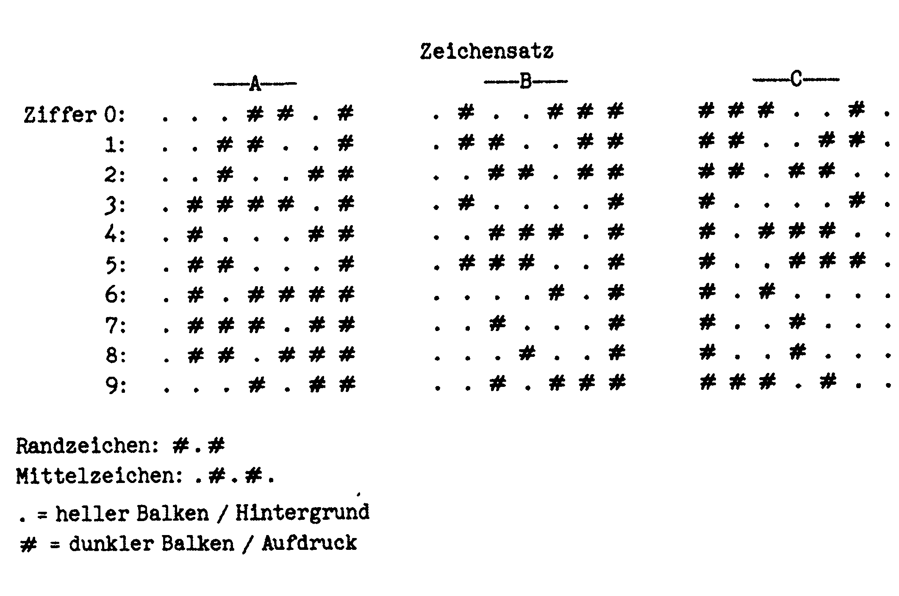

Bar-Codes selbst gemacht
Jeder kennt sie, aber die wenigsten wissen über sie Bescheid. Gemeint sind die Strich-Codes auf Milchtüten, Waschpulvern und anderen Konsumgütern. Daß man diese Codes mit einem C 64 und einem Epson-Drucker selbst herstellen kann, zeigt unsere Anwendung des Monats.


Um ein großes Wagenlager effektiv verwalten zu können, ist ein hohes Maß an Genauigkeit und Schnelligkeit erforderlich. Der aktuelle Warenbestand muß ständig abrufbar sein, damit zum Beispiel eventuell erforderliche Nachbestellungen rechtzeitig erkannt und ausgeführt werden können.
Dieser enorme Verwaltungsaufwand erfordert ein hohes Maß an Geschwindigkeit und Verläßlichkeit. Eine optimale Aufgabe für einen Computer.
Das Problem besteht nun darin, dem Computer die Artikelnummer einzugeben. Unsere arabischen Zahlen sind nämlich für eine schnelle Auswertung durch ein Lesegerät zu komplex, zu fehleranfällig und daher ungeeignet. Dadurch kam man auf das Prinzip der sogenannten »Bar-Codes« Sie entsprechen dem einzigen, für Computer verständlichen Zahlensystem (Binärsystem), bestehend aus Nullen und Einsen. Da sich zwei Werte durch zwei Zustände unterscheiden lassen, genügt die Darstellung »Strich« oder »nicht Strich« Somit kann jedem Artikel entsprechend seiner Lagernummer eine Kombination aus »Strich« und »nicht Strich« zugeordnet werden. Der Lagerverwalter braucht beim Warenein- und -ausgang nur noch mit einem Lesestift über den Bar-Code-Aufkleber der Packung zu fahren. Alles weitere übernimmt der Computer.
Eine weitere Schwierigkeit besteht darin, daß die Bar-Codes äußerst exakt gedruckt werden müssen. Entsprechend teuer sind auch die Druckmaschinen für die Aufkleber.
Unsere Anwendung des Monats zeigt, daß sogar ein C 64 mit einem Epson FX80-Drucker und der richtigen Software in der Lage ist, diese Codes sauber zu Papier zu bringen.
Interessant ist auch, daß die gesamte Darstellung einer europäischen Norm entspricht. Wenn Sie also selbst ein Lesegerät besitzen, können Sie die Codes auswerten lassen.
(Dirk Henckels/tr)Aufbau und Technik der EAN-Codes
Der EAN-Code besteht aus zwei Teilen: dem Balkenfeld und der Ziffernreihe. Der Computer kann nur die Balken »lesen«. Die Ziffern, ausschließlich »menschenlesbar«, bergen die gleichen Informationen: Länderkennung, bbn, Produktnummer und Prüfziffer (Bild 2).

Die Länderkennung ist international festgelegt; für Deutschland sind die Zahlen 40 bis 43 reserviert. Die bbn (Bundeseinheitliche Betriebsnummer) kann von jedem Unternehmen oder Privatmann gegen eine Gebühr beantragt werden. Sie ist fünfstellig und muß — soll auch EAN-8 (mit dreistelliger bbn) gedruckt werden — auf zwei Nullen enden. Diese Nullen werden für den EAN-Kurzcode dann weggelassen. Die Produktnummer kann von jedem Unternehmer willkürlich festgelegt werden. Dafür steht ihm der gesamte fünf-(EAN-13) beziehungsweise zweistellige (EAN-8) Zahlenbereich zur Verfügung. Für die Prüfziffer berechnet man die Summe der Produkte aus jeder der zwölf beziehungsweise sieben bereits festgelegten Ziffern und einem festgelegten Multiplikator. Die Prüfziffer ist die Differenz zwischen dem erhaltenen Wert und der nächsthöheren durch zehn teilbaren Zahl. Ist der Wert bereits durch zehn teilbar, ist die Prüfziffer null. Eine solche Rechnung zeigt Bild 3.

Die Balkenreihe ist folgendermaßen aufgebaut: ein Randzeichen, sechs Ziffernzeichen, ein Mittelzeichen, sechs Ziffernzeichen, ein Randzeichen. Die erste Ziffer der Zahlenreihe, Teil der Länderkennung, wird nicht codiert, sondern durch Kombination verschiedener Zeichensätze festgelegt. Jedes Zeichen setzt sich aus sogenannten Modulen zusammen. Jedes Modul kann, ähnlich einem Bit, zwei Zustände annehmen: dunkler (= gedruckter) beziehungsweise heller (= nicht gedruckter) senkrechter Balken. Alle Module sind gleich breit. Breitere Balken entstehen durch Aufeinanderfolgen von Modulen gleichen Zustands. Ziffernzeichen bestehen aus sieben, das Mittelzeichen aus fünf, die Randzeichen aus drei Modulen (Bild 4).

Es stehen drei Zeichensätze (fortan mit »A« bis »C« bezeichnet) zur Verfügung. Zeichensatz C ist der gespiegelte Zeichensatz Bund wird immer zwischen Mittelzeichen und rechtem Randzeichen verwendet. Die Kombination der Zeichensätze A und Bin der ersten Hälfte (bis zum Mittelzeichen) ergibt die erste Zahl der Länderkennung, die janichtdurch Module dargestellt wird. Das hat folgenden Sinn: Bereits vor Entstehung des EAN-Codes existierte in den USA ein ähnlicher Code, der l2stellige UPC-Code. Der Aufbau ist derselbe, jedoch ist die Länderkennung nur Istellig (daher auch nur 12, nicht 13 Zeichen), und es wird nur mit den Zeichensätzen A und C gearbeitet, da ja keine dreizehnte Ziffer codiert werden muß. Die EAN-I3-Lesegeräte können auch UPC decodieren: Wird in der ersten Hälfte nur Zeichensatz A verwendet, ist die ausgegebene Länderkennung »0x« (= USA) — unabhängig davon, ob unter dem Balken zwölf oder dreizehn Ziffern stehen.
Zum Programm
Das Programm (siehe Listing) entstand eigentlich aus einer Verlegenheit heraus. Versandkartons für ein Industrieunternehmen waren versehentlich nicht mit EAN-Codes bedruckt worden. Da jedoch für eine Reklamation keine Zeit mehr vorhanden war, mußten die zum Versand nötigen Barcodes auf andere Weise erstellt werden. Dazu diente Version Ides Programms. Das Listing zeigt die (unter anderem um absturzsichere Eingaberoutinen) erweiterte und besser strukturierte Version II.
In Zeile 16 wird in N$ die bbn festgelegt. Da in der Regel hauptsächlich eine bbn verwendet wird, ist diese Voreinstellung sinnvoll. Trotzdem ist die bbn voll editierbar, um sich nicht auf eine bbn festlegen zu müssen. Die Prüfziffer wird nicht mit eingegeben, sondern in Zeile 23 bis 31 berechnet und ausgegeben. Die Zeichensatzabfolge wird anhand der ersten Ziffer der Länderkennung in Zeile 33 und 34 abgelegt. Die Zeilen 36 bis 42 legen die Modulabfolge fest, die dann in den Zeilen 44 bis 49in druckerverständliche Codesübersetzt wird. In Zeile 51 wird der Drucker angesprochen. Die Sekundäradresse wurde so gewählt, daß keine Umcodierung durch das Interface erfolgt, um — eventuell bei entsprechender Änderung der Sekundäradresse — das Umsetzen auf andere Interfacetypen zu erleichtern (zum Beispiel Data-Becker-Interface: Sekundäradresse 7). In jedem Fall wird jedoch ein Epson- oder Epson-Steuercode-kompatibler Drucker vorausgesettzt.
Bis Zeile 58 erfolgt der Ausdruck der Balken, bis Zeile 64 der der Klarschrift. Die Zeilen 78 bis 87 beinhalten die drei Zeichensätze für die Ziffern Null (Zeile 78) bis neun (Zeile 87). Zeile 88 und 89 enthalten die Kombination der Zeichensätze A und B für die Länderkennungen »Ox«bis»9x«. F$und L$ (Zeile 93 und 94) enthalten die Druckerübersetzung für ein dunkles beziehungsweise helles Modul. Durch Variation der Länge dieser Strings sowie des Wertes der Variable RC in Zeile 52 kann die Größe des Balkenfeldes geändert werden. Allerdings kann, je nach Drucker und -verfahren, die Lesesicherheit der Codes beeinträchtigt werden, wenn die Größe zu klein gewählt wird. Ebenso muß bei einer derartigen Änderung der Klartextausdruck entweder angepaßt oder weggelassen werden. Letzteres ist möglich, da die Lesegeräte ausschließlich das Balkenfeld, nicht aber die Klarschrift entziffern können. Daher ist es auch unwesentlich, daß das Programm den Epson-internen Zeichensatz und nicht den empfohlenen OCR-B-Zeichensatz verwendet.
In Zeile 53 bis 64 kommt ein Steuercode vor, der ESC beziehungsweise chr$(27) entspricht. Er erscheint auf dem Bildschirm als inverse eckige Klammer auf und wird angegeben als <Control>-<:>.
Drucktechnik und Druckeranpassung
Der für die Balken gewählte Grafikmodus hat eine Auflösung von 1920 Punkten pro Zeile. Diese Auflösung gewährt die größte Flexibilität hinsichtlich der Codegröße. Andere Auflösungen führen bei entsprechender Änderung von F$ und L$ zu ähnlichen Ergebnissen. Außerdem wurde der für Textdruck eingebaute Doppeldruckmodus für den Grafikausdruck simuliert. In diesem Modus wird jede Zeile zweimal gedruckt, und zwar mit einem vertikalen Versatz von 1/3 Punktdurchmesser (1/216 Zoll). Dadurch wirkt eine senkrechte Linie nicht mehr in Punkte aufgelöst, sondern durchgehend. In Zusammenhang mit der hohen horizontalen Auflösung entsteht auch bei nicht mehr so neuem Farbband noch eine durchgehende Fläche, keine Ansammlung von Punkten als Balken.
Verwendete Codes zur Druckeransteuerung:
| ESC @Klammeraffe: | Drucker-Reset |
| ESC chr$(108) chr$(10): | setzt linken Rand auf 10 |
| ESC 3 chr$(1): | setzt Zeilenvorschub auf 1/216 Zoll |
| ESC 1: | setzt Zeilenvorschub auf 7/72 Zoll |
| ESC 2: | setzt Zeilenvorschub auf 1/6 Zoll |
| ESC a: | 96 Zeichen/Zeile |
| ESC g: | Doppeldruck (s.o.) |
| ESC W 1 bzw. 0: | Breitschrift ein bzw. aus |
| ESC * chr$(3) chr$(58) chr$(2): | Die nächsten 570 Bytes werden im 1920-Pixel-Grafik-Modus gedruckt. |
Eine Anpassung an andere, nicht Epson-kompatible Drucker müßte ohne größere Schwierigkeiten möglich sein.
(Dirk Henckels/tr)